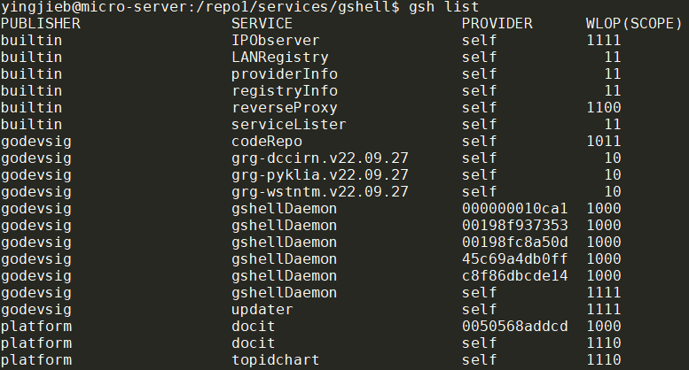

记录一次socket泄漏的调查过程.
1. 背景
gshell是golang写的微服务框架, 有个类似dockerd的daemon负责服务调度和发现, 它用到了adaptiveservice库, 代码我放在了github godevsig/adaptiveservice.
gshell正常用起来应该是这样, 风格类似docker:
gshell daemon可以感知所有gshell node(称作provider)提供的服务:

2. 问题现象
gshell daemon经过大概几个月的运行, log里面显示大量的too many open files
[2022/11/29 10:32:50.727067][daemon][WARN] stream transport listener: accept tcp [::]:11985: accept4: too many open files
[2022/11/29 10:32:50.727073][daemon][WARN] stream transport listener: accept tcp [::]:11985: accept4: too many open files
[2022/11/29 10:32:50.727078][daemon][WARN] stream transport listener: accept tcp [::]:11985: accept4: too many open files
[2022/11/29 10:32:50.727083][daemon][WARN] stream transport listener: accept tcp [::]:11985: accept4: too many open files
[2022/11/29 10:32:50.727098][daemon][WARN] stream transport listener: accept tcp [::]:11985: accept4: too many open files
[2022/11/29 10:32:50.727110][daemon][WARN] stream transport listener: accept tcp [::]:11985: accept4: too many open files
[2022/11/29 10:32:50.727117][daemon][WARN] stream transport listener: accept tcp [::]:11985: accept4: too many open files
[2022/11/29 10:32:50.727122][daemon][WARN] stream transport listener: accept tcp [::]:11985: accept4: too many open files
[2022/11/29 10:32:50.727128][daemon][WARN] stream transport listener: accept tcp [::]:11985: accept4: too many open files
[2022/11/29 10:32:50.727133][daemon][WARN] stream transport listener: accept tcp [::]:11985: accept4: too many open files
[2022/11/29 10:32:50.727138][daemon][WARN] stream transport listener: accept tcp [::]:11985: accept4: too many open files
[2022/11/29 10:32:50.727143][daemon][WARN] stream transport listener: accept tcp [::]:11985: accept4: too many open files
[2022/11/29 10:32:50.727149][daemon][WARN] stream transport listener: accept tcp [::]:11985: accept4: too many open files
[2022/11/29 10:32:50.727154][daemon][WARN] stream transport listener: accept tcp [::]:11985: accept4: too many open files
[2022/11/29 10:32:50.727159][daemon][WARN] stream transport listener: accept tcp [::]:11985: accept4: too many open files
[2022/11/29 10:32:50.727165][daemon][WARN] stream transport listener: accept tcp [::]:11985: accept4: too many open files
[2022/11/29 10:32:50.727170][daemon][WARN] stream transport listener: accept tcp [::]:11985: accept4: too many open files
使用prlimit查看进程的limits, 发现此进程打开文件的上限是1024:
1024这个值对一个daemon来说是太小了, 使用prlimit -n10240 -p 3597864可以临时修改最大文件数, 但能不能真正解决问题? 还是只能让daemon可以跑更久一点, 但最后还是会崩?
我们要讨论的问题是
- 是否有fd泄漏
- 如果有的话, fd泄漏发生在哪里
3. 分析调查
3.1. 代码分析
上述错误打印对应下面的代码, 在一个goroutine里的循环里不断的Accept连接, 并把新建好的netconn放到这个streamTransport的chanNetConn 里面.
注: 这里我把log打印改为了Debugf, 否则就会产生大量的too many open files打印, 最终log文件会把磁盘填满.
每个新建的netconn都会在单独的goroutine里面处理:
defer func() {
for netconn := range st.chanNetConn {
netconn.Close()
}
}()
closed := st.closed
for {
select {
case <-closed:
return
case netconn := <-st.chanNetConn:
go handleConn(netconn)
}
}
处理过程比较复杂, 基本上最后也会在defer里面调用netconn.Close()
除了一个例外:
如果fnOnConnect存在的话, 这个函数就是被设计成接管模式
// OnConnectFunc sets a function which is called when new
// incoming connection is established.
// Further message dispaching on this connection will stop
// if fn returns true, leaving the connection NOT closed, fn
// should then take over this Netconn and close it when finished.
func OnConnectFunc(fn func(Netconn) (takeOver bool)) ServiceOption {
return func(svc *service) {
svc.fnOnConnect = fn
}
}
这么看代码流程上似乎OK. 那么问题就是简单的1024个client同时连接导致的fd不足吗?
3.2. 用lsof和netstat调查
通过几天的/proc/pid/fd观察, 发现fd个数确实在缓慢增长, 大部分是socket:
lsof -np 3597864显示更详细的信息:
对socket来说, 能显示状态的FD, 比如LISTEN, ESTABLISHED, 是比较正常的.
而后面数量比较多的sock:
gshell 3597864 nobody 42u sock 0,9 0t0 3126838341 protocol: TCPv6
gshell 3597864 nobody 43u sock 0,9 0t0 3126844553 protocol: TCPv6
gshell 3597864 nobody 44u sock 0,9 0t0 3138644284 protocol: TCPv6
gshell 3597864 nobody 45u sock 0,9 0t0 3124033098 protocol: TCPv6
gshell 3597864 nobody 46u sock 0,9 0t0 3124035739 protocol: TCPv6
gshell 3597864 nobody 47u sock 0,9 0t0 3126847184 protocol: TCPv6
gshell 3597864 nobody 48u sock 0,9 0t0 3140046172 protocol: TCPv6
gshell 3597864 nobody 49u sock 0,9 0t0 3126845992 protocol: TCPv6
gshell 3597864 nobody 50u sock 0,9 0t0 3126836885 protocol: TCPv6
gshell 3597864 nobody 51u sock 0,9 0t0 3138652549 protocol: TCPv6
gshell 3597864 nobody 52u sock 0,9 0t0 3126843789 protocol: TCPv6
gshell 3597864 nobody 53u sock 0,9 0t0 3137310543 protocol: TCPv6
gshell 3597864 nobody 54u sock 0,9 0t0 3137313903 protocol: TCPv6
gshell 3597864 nobody 55u sock 0,9 0t0 3137306228 protocol: TCPv6
这个patten更像是socket leak, 见下面的讨论
- Sockets found by lsof but not by netstat
- In lsof output what are those 'sock' lines?
- Zombie socket file descriptors issue
lsof和/proc/3597864/fd的socket fd数量是一致的:
root@micro-server:/home/yingjieb# lsof -np 3597864 | egrep "IP|sock|unix" | wc -l
59
root@micro-server:/proc/3597864# ls -l fd | grep socket | wc -l
59
这59个socket fd中, 有40个是疑似泄漏的fd:
root@micro-server:/home/yingjieb# lsof -np 3597864 | egrep "sock 0,9" | wc -l
40
用lsof和netstat命令查看正常状态的socket:
root@micro-server:/home/yingjieb# lsof -np 3597864 | egrep "IP|sock|unix" | egrep -v "sock 0,9"
gshell 3597864 nobody 7u IPv4 3112600867 0t0 UDP *:9923
gshell 3597864 nobody 8u unix 0xffff8af63fcf5c00 0t0 3112600870 @adaptiveservice/builtin_LANRegistry.sock type=STREAM
gshell 3597864 nobody 9u unix 0xffff8af63fcf5400 0t0 3112600873 @adaptiveservice/builtin_registryInfo.sock type=STREAM
gshell 3597864 nobody 10u unix 0xffff8af63fcf5800 0t0 3112600875 @adaptiveservice/builtin_providerInfo.sock type=STREAM
gshell 3597864 nobody 11u IPv6 3112600879 0t0 TCP *:11985 (LISTEN)
gshell 3597864 nobody 12u IPv6 3112600880 0t0 TCP *:40811 (LISTEN)
gshell 3597864 nobody 13u unix 0xffff8af61f3d7800 0t0 3112598912 @adaptiveservice/builtin_serviceLister.sock type=STREAM
gshell 3597864 nobody 14u unix 0xffff8af61f3d2800 0t0 3112598913 @adaptiveservice/builtin_IPObserver.sock type=STREAM
gshell 3597864 nobody 15u IPv6 3112598914 0t0 TCP *:35803 (LISTEN)
gshell 3597864 nobody 16u unix 0xffff8af55a29bc00 0t0 3112599907 @adaptiveservice/godevsig_codeRepo.sock type=STREAM
gshell 3597864 nobody 17u IPv6 3112599908 0t0 TCP *:42963 (LISTEN)
gshell 3597864 nobody 18u unix 0xffff8af63fcf6800 0t0 3112600888 @adaptiveservice/godevsig_updater.sock type=STREAM
gshell 3597864 nobody 19u IPv6 3112600889 0t0 TCP *:37605 (LISTEN)
gshell 3597864 nobody 20u unix 0xffff8af1102ca400 0t0 3112603785 @adaptiveservice/godevsig_gshellDaemon.sock type=STREAM
gshell 3597864 nobody 21u IPv6 3112603786 0t0 TCP *:35851 (LISTEN)
gshell 3597864 nobody 22u IPv6 3112603788 0t0 TCP *:42063 (LISTEN)
gshell 3597864 nobody 23u IPv6 3112650095 0t0 TCP 192.168.0.18:40811->10.182.101.165:43154 (ESTABLISHED)
gshell 3597864 nobody 24u IPv6 3112650097 0t0 TCP *:41375 (LISTEN)
gshell 3597864 nobody 25u IPv6 3112650098 0t0 TCP *:33655 (LISTEN)
root@micro-server:/home/yingjieb# netstat -apn | grep 3597864
tcp6 0 0 :::42063 :::* LISTEN 3597864/bin/gshell
tcp6 0 0 :::11985 :::* LISTEN 3597864/bin/gshell
tcp6 0 0 :::42963 :::* LISTEN 3597864/bin/gshell
tcp6 0 0 :::33655 :::* LISTEN 3597864/bin/gshell
tcp6 0 0 :::35803 :::* LISTEN 3597864/bin/gshell
tcp6 0 0 :::41375 :::* LISTEN 3597864/bin/gshell
tcp6 0 0 :::37605 :::* LISTEN 3597864/bin/gshell
tcp6 0 0 :::35851 :::* LISTEN 3597864/bin/gshell
tcp6 0 0 :::40811 :::* LISTEN 3597864/bin/gshell
tcp6 0 0 192.168.0.18:40811 10.182.101.165:43154 ESTABLISHED 3597864/bin/gshell
udp 0 0 0.0.0.0:9923 0.0.0.0:* 3597864/bin/gshell
unix 2 [ ACC ] STREAM LISTENING 3112600875 3597864/bin/gshell @adaptiveservice/builtin_providerInfo.sock
unix 2 [ ACC ] STREAM LISTENING 3112598913 3597864/bin/gshell @adaptiveservice/builtin_IPObserver.sock
unix 2 [ ACC ] STREAM LISTENING 3112600870 3597864/bin/gshell @adaptiveservice/builtin_LANRegistry.sock
unix 2 [ ACC ] STREAM LISTENING 3112600873 3597864/bin/gshell @adaptiveservice/builtin_registryInfo.sock
unix 2 [ ACC ] STREAM LISTENING 3112599907 3597864/bin/gshell @adaptiveservice/godevsig_codeRepo.sock
unix 2 [ ACC ] STREAM LISTENING 3112598912 3597864/bin/gshell @adaptiveservice/builtin_serviceLister.sock
unix 2 [ ACC ] STREAM LISTENING 3112603785 3597864/bin/gshell @adaptiveservice/godevsig_gshellDaemon.sock
unix 2 [ ACC ] STREAM LISTENING 3112600888 3597864/bin/gshell @adaptiveservice/godevsig_updater.sock
正常状态的socket, 无论用lsof还是netstat得到的数量统计是一致的:
root@micro-server:/home/yingjieb# lsof -np 3597864 | egrep "IP|sock|unix" | egrep -v "sock 0,9" | wc -l
19
root@micro-server:/home/yingjieb# netstat -apn | grep 3597864 | wc -l
19
而"异常"的sock在netstat或是ss命令中都难寻踪迹, 是socket泄漏吗?
3.3. 可能就是socket泄漏
网上的说法大部分都指向了代码bug, 即socket fd并没有被close导致的fd泄漏. 根据这篇文章, 这些socket在/proc/net/*的信息被kernel移除了, 所以lsof查询不到这些socket信息.
从这里开始, 就要看代码了.
3.4. pprof
因为是golang写的, 我已经加了pprof支持, 通过log找到debug端口:
debugging at: [::]:42063
首先要看一下goroutine是否有泄漏:curl http://localhost:42063/debug/pprof/goroutine?debug=1
一共106个goroutine, 要一个一个看:goroutine profile: total 106
3.4.1. reverse proxy造成了goroutine泄漏
下面的goroutine数量正好40个:
40 @ 0x43fb25 0x406a0f 0x40664b 0x63ac85 0x641c65 0x4791a1
# 0x63ac84 github.com/godevsig/adaptiveservice.(*proxyRegServiceInWAN).Handle.func3+0x2c4 /go/pkg/mod/github.com/godevsig/adaptiveservice@v0.9.24-0.20220927055808-74b42ce93f20/builtinservices.go:199
# 0x641c64 github.com/godevsig/adaptiveservice.(*streamTransport).receiver.func2+0x1444 /go/pkg/mod/github.com/godevsig/adaptiveservice@v0.9.24-0.20220927055808-74b42ce93f20/streamtransport.go:320
对应代码如下, 在199行有可能永远阻塞:
这个reverse proxy涉及3方, 分别是:
- 内网服务方S
- 外网用户方C
- 代理方P
代理流程如下:
- S不能直接注册public服务, 它发现内网能提供reverse proxy服务的P
- S连接P, 得到长连接ConnCmd, P代替S完成注册public服务, 该服务的public端口为SrvPort
- P listen一个对S专用的端口ReversePort
- 每当有C去连接P的SrvPort时, 会得到一个socket(ClientSocket)
- P通过ConnCmd给S发送通知msg
- S接收msg后主动去连接P的ReversePort
- P得到一个新socket(ServerSocket)
- P负责在ClientSocket和ServerSocket之间按字节转发(
io.Copy) - 任意一方断开时, 调用对方连接的
Close()
199行出问题时, 或许是因为S被kill了, S和P的长连接已经断开, 导致S无法执行第6步, 而P则卡在第7步, 就是第199行.
4. 解决
当S和P的长连接ConnCmd出现问题时, close掉channel chanServerConn, 这样就不会在199行阻塞. 修改见下面第183行和201行
修改后的版本lsof的正常显示:
5. 总结
- lsof里面"不正常"的sock就是fd泄漏, 代码里没有把socket close
- 这些socket在netstat里面没有显示
6. 知识点
6.1. TIME_WAIT状态的连接
在本端close掉connection后, socket不会马上关闭, 要大概至少50秒后才会在netstat里面消失.
下面图里, 192.168.0.18:41375是server端, 和多个client10.182.101.165:xxxxx连接.
6.2. close状态的迁移